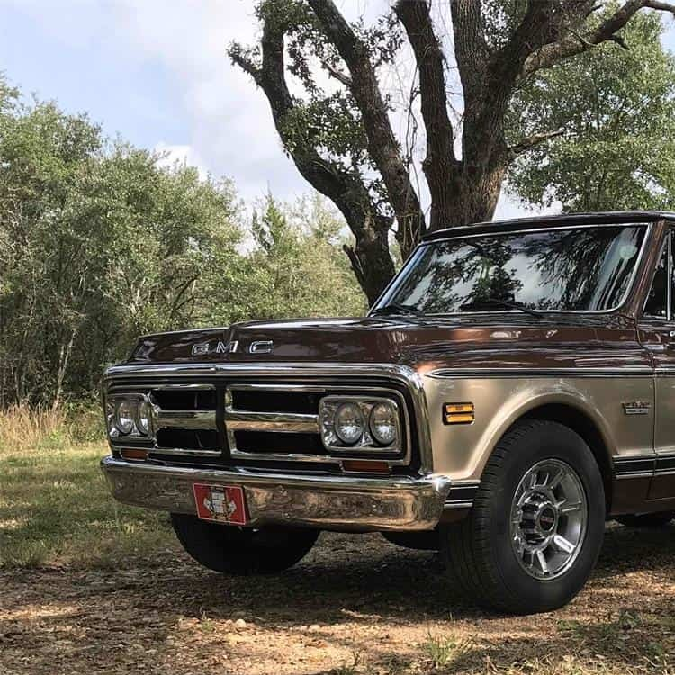
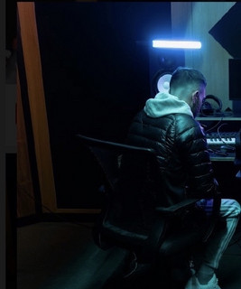

Meet the Artists

Skrubz
Signed directly to Designated Records
Skrubz is an artist from the south east of the UK. He signed to Designated Records for his passion of UK Garage, Drum & Bass, House and more, Designated signed Skrubz regarding his extreme originality to his creations.

Aspen Chrysler
Signed Directly to Designated Records
Aspen Chrysler is an artist from Klaipeda, Lithuania who has a passion for 80's style synth music, Due to connections with the Director, he took on the opportunity to become an artist, helping him fulfill his passion.
Oliver Martin
Signed directly to Designated Records
Oliver Martin is an actor and Video Game producer from the UK. He works with Designated actively amongst music videos and signed directly to Designated due to an upcoming video game production known as Totalled; launching Spring 2025.

SoulTide
Signed directly to Designated Records
SoulTide is an artist from the UK who focusses on writing melodic rap about true life experiences. From inspiration from artists such as Juice WRLD, Lil Tjay, Trippie Redd, he aims to write sad, relatable music for the world to hear.

Tucked Fits
Signed directly to Designated Records
Tucked Fits is a country band, starting of with several artists amongst the group, Tucked Fits has creativity regarding creating humorous music for people to laugh and listen to, with the take of solidifying the style of country music.

Nathan Nim
Signed releases to Designated Records
Nathan Nim is an artist from Ireland that has passion for the creation of Deep and Melodic House music, 26 and a DJ; he hopes to extend his passion amongst his creativity across his music and achieve success in his career.
Kieran Ollin
Signed releases to Designated Records
Kieran Ollin is a 19-year-old welsh music producer making waves in the electronic and pop music scene. Kieran has gathered a lot of attention from several unique mixes and has achieved over 1 million streams across all platforms.

E1
Signed releases to Designated Records
E1 is an artist & kickboxing champion based in the Burnley area near Manchester, in the United Kingdom, he has shown extreme development across many releases. He has freestyled on House, Drill and many other genres.
Lusson
Signed releases to Designated Records
Lusson is an artist with great passion for deep and electrifying house music. Aged 24 and from Ireland, Lusson wants to solidify their experience within the music industry wether it comes to djing or producing. Can't wait to see their progress.
NAUGAD
Signed releases to Designated Records
NAUGAD is a creative artist and producer from the heart of Ukraine, attempting success through their production of heavy EDM releases. They dream to produce intense EDM tracks no matter how big or small the streams are.

Holly Berry
Signed releases to Designated Records
Holly Berry is a multi-award winning songwriter who signed the release On Repeat with other artists to Designated Records, boasting 40k+ streams and reaching #98 in the UKs electronic charts; backed by BBC Introducing for years to come.
Samvl
Signed releases to Designated Records
Samvl (Samuel) is an 18-year-old producer with love for the production of house, pop and trap music, he has signed some releases to Designated in-order to attempt to grow his portfolio which has became successful, a very talented producer.
KayP
Signed releases to Designated Records
Kieron is an artist who has passion for UK Garage/Bassline freestyle. Being a talented MC (Master of Ceremonies) he has performed at several gigs and signed release "Lost In Desire" to Designated whilst working alongside the Director to fulfill his career.
KJ
Signed releases to Designated Records
KJ is an artist who has signed several releases to Designated solidifying his experience in UK Garage freestyle. He has a passion for songwriting with passion for the love of the UK Bassline scene, taking ideas from artists like Bad Boy Chiller Crew.

Underdoggs
Signed releases to Designated Records
Underdoggs is a UK Rap production team based in Sheffield, UK; writing songs amongst several genres being House, UK Drill, UK Garage, Trap and Hip-Hop with more music to come in the future. Very talented and there to blow up in the future.
smasher artist
Signed releases to Designated Records
Smasher is an artist based in Bradford, who has been making music since the age of 13, solidifying himself with top artists like Mase Hancock, RD West Yorks, KAV, and more artists he is bound to show off his passion for freestyling.
Solo Decisions
Signed releases to Designated Records
Solo Decisions is a incredible deep-house producer from the UK with extreme passion for UK Garage and UK Deep House production. Solo Decisions uses classic sounds such as the M1 Organ sound to bring an idea of old school production to the future.
Hark
Signed releases to Designated Records
Hark is an old school producer taking inspiration from old house tracks and UK Garage, with signed release 'November Morning' with the director, he wants to intensify his passion as a hobby for creating music in these genres.
Gr3ggz
Signed releases to Designated Records
Gr3ggz has a passion for old school, organ bassline based productions within his music, he shows his passion amongst released tracks on Spotify, and his passion for creating old-school organ house beats available amongst BeatStars and YouTube.

HG
Signed releases to Designated Records
HG is an bassline, house MC (Master of Ceremonies) from Newcastle, who has great passion for the Organ Bassline scene. He wishes to become big and take performances with other artists in different venues across the UK.